本实验沿用实验一选定的外卖点餐与配送系统。系统服务校园周边三公里内的餐饮外卖场景，覆盖顾客、商家、配送人员、平台管理员四类角色，解决四个现实问题：订单靠人工记录导致漏单错单、价格靠口头约定导致改价纠纷、库存靠人工判断导致超卖、状态不同步导致"顾客以为在做、商家以为已送"。实验一已把这些问题整理成 29 条需求，本实验的任务是把这些需求翻译成可实现的软件结构。
设计不是重新做需求，而是把实验一的需求映射到模块、类、状态与界面。下表是本次设计直接依赖的基线数据。
| 维度 | 基线 | 设计中如何使用 |
|---|---|---|
| 需求规模 | 29 条（已确认 26 条：功能 20、非功能 5、约束 1；已拒绝 2；待确认 1） | 每个功能模块都要能追溯到需求编号，附录 A 给出完整矩阵 |
| 用户角色 | 顾客、商家、配送人员、平台管理员（REQ-003） | 决定 4 个客户端入口 + 服务端"角色 + 数据归属"双重校验 |
| 订单状态 | 9 个状态、9 条白名单转换（REQ-029） | 落成 OrderStateMachine 与状态图，非法转换拒绝 |
| 核心数据 | 10 类业务数据（REQ-021） | 落成 12 张主要表与唯一约束 |
| 异常场景 | 11 条需求涉及异常/边界/冲突 | 落成幂等、条件扣减、超时任务、退款状态机、乐观锁 |
| 质量属性 | 性能、安全、可用性、易用性、兼容性（REQ-020/022/025/027/028） | 决定部署形态、事务边界、脱敏策略与双端响应式 UI |
按"一个模块对应一组内聚的业务能力、且能独立被测试"的原则，把 20 条已确认功能需求收敛为 8 个功能模块。模块编号 M1–M8 在后续架构图、界面与需求矩阵中统一使用。
| 编号 | 模块 | 职责 | 对应需求 | 主要使用角色 |
|---|---|---|---|---|
| M1 | 账号与权限 | 注册登录、资质审核、角色与数据归属校验、口令哈希与脱敏 | REQ-001、002、003、022 | 全部角色 |
| M2 | 店铺与菜品 | 店铺资料与营业状态（营业中/打烊/临时停业）、菜品增删改上下架、改价留痕 | REQ-004、005 | 商家、管理员 |
| M3 | 查询与购物车 | 关键词/分类/价格/营业中筛选与排序、购物车合并、价格变化与售罄提示 | REQ-006、007 | 顾客 |
| M4 | 订单 | 下单（幂等 + 价格快照）、接单/拒单、制作完成、取消、超时自动取消、状态机 | REQ-008、009、011、012、024、029 | 顾客、商家、系统 |
| M5 | 库存 | 每日库存重置、事务内条件扣减、按订单幂等释放、售罄标记 | REQ-010 | 系统（被订单调用） |
| M6 | 配送 | 指派骑手、取餐、送达、自动确认、配送失败报备与重派 | REQ-013、014、023 | 骑手、商家、管理员 |
| M7 | 退款与异常 | 取消/拒单/超时/失败统一登记退款、退款异常重试、与订单状态同事务 | REQ-012、019（已拒绝在线支付） | 管理员、系统 |
| M8 | 统计与审计 | 营业额与销量统计、平台排名、关键操作日志记录与多条件查询 | REQ-016、017、018 | 商家、管理员 |
依赖方向是单向的、可画成有向无环图：M1 被所有模块依赖（鉴权），M3 依赖 M2（菜品数据），M4 编排 M5/M6/M7/M8，M8 只读其它模块的数据。没有反向依赖，也没有环形依赖。
| 实验一要求（节选） | 本实验的设计落点 | 验证材料 |
|---|---|---|
| 四类角色与权限 | M1 + 网关鉴权 + 服务端数据归属校验 | 用例图、类图 User/Role、界面 11 |
| 订单 ≥4 个状态与允许/禁止转换 | 9 状态 + 9 条白名单 + 版本号乐观锁 | 状态图、REQ-029、OrderStateMachine |
| 数据关联、唯一性、同步更新 | 12 张表 + 唯一索引 + 同事务更新 | 3.8 数据设计、类图 |
| 多条件查询 + 统计汇总 | M3 查询条件、M8 日汇总读模型 | 界面 1、9、13 |
| ≥2 类异常处理 | 幂等、超时、售罄、拒单、配送失败、退款异常 | 活动图、时序图 ×2、界面 3/12 |
| 关键操作日志与查询 | OperationLog + AuditService + 界面 13 | 类图、组件图、REQ-018 |
| 非功能需求 | 部署形态、事务边界、脱敏、双端 UI | 部署图、3.6 决策、界面说明 |
| 类别 | 内容 |
|---|---|
| 功能目标 | 完整覆盖 M1–M8 八个模块，保证实验一 26 条已确认需求都有落点；核心链路（下单→接单→配送→完成）可闭环运行。 |
| 质量目标 | 订单/库存/退款/日志强一致；查询 50 并发 P95 ≤ 1 秒（REQ-020）；越权 100% 拦截（REQ-022）；营业时段可用性 ≥ 99.5%（REQ-025）。 |
| 团队约束 | 1 人开发、课程周期内完成、单机可部署。这条约束直接决定了"模块化单体"而不是微服务。 |
| 演进约束 | 模块边界要清晰，将来可按 M4/M5/M6 拆分；不在第一版引入分布式事务。 |
架构风格不是越"先进"越好，而是在当前约束下让一致性成本最低。下表比较了三种候选。
| 候选 | 优点 | 在本项目中的问题 | 结论 |
|---|---|---|---|
| 单体分层（全部逻辑写在一个包） | 开发最快 | 订单、库存、退款、日志互相直连，实验一强调的"状态一致、幂等、日志同事务"会散落各处，后续无法维护 | 不采用 |
| 微服务（按模块拆 8 个服务） | 边界清晰、可独立部署 | 下单要同时改订单库、库存库、日志库，需引入分布式事务或 Saga，复杂度和运维成本远超 1 人课程项目的收益；且 REQ-025 要求"状态变更与日志同事务"，跨库后无法用本地事务保证 | 本期不采用，但保留拆分可能 |
| 模块化单体 + 分层 + 事件出箱 | 模块内高内聚、模块间低耦合；一个本地事务就能保证订单/库存/日志强一致；部署只需一个 jar | 需要自律地维护模块边界，否则容易退化成"大泥球" | 采用 |
最终形态：前后端分离（4 个前端入口 + 1 个后端）+ 模块化单体（8 个模块，各自有 controller/application/domain/infrastructure）+ 事件出箱（通知类副作用走 Outbox 异步投递）。强一致用本地事务，最终一致只用在"通知"和"统计"这类可以延迟的场景。
包图（4.5 节）给出四层：interfaces（控制器与 DTO）→ application（用例编排）→ domain（实体、领域服务、仓储接口）→ infrastructure（持久化、缓存、调度、安全）。三条硬性规则：
组件图（4.4 节）把系统拆成 4 个客户端组件、1 个接入层组件（网关 + 令牌）、9 个应用组件、5 个基础设施组件。几个关键的组件间约定：
下单与超时取消是两个最能体现架构设计的流程，分别用两张时序图表达（4.9、4.10 节）。这里先说明它们对架构的影响：
| 流程 | 协作要点 | 对架构的约束 |
|---|---|---|
| 提交订单 | 网关鉴权 → 订单服务查幂等键 → 校验价格 → 库存服务条件扣减 → 订单落库 → 审计写日志 → 提交事务 → 投递事件 | 订单、明细、库存、幂等记录、日志必须在同一数据库、同一事务内（因此本期不拆库） |
| 超时取消 | 调度器每分钟扫描 → 条件更新改状态 → 释放库存 → 生成退款 → 写日志 → 通知双方 | 调度必须可幂等重入；与商家"接单"并发时只能有一方成功（依赖版本号与条件更新） |
| # | 决策 | 做法 | 理由 / 对应需求 |
|---|---|---|---|
| D1 | 订单状态集中管理 | Order.transitTo(target, operator) 内维护白名单表，先校验再改，配合 version 字段做乐观锁 | 9 个状态、9 条合法转换分散写会互相矛盾；集中后"禁止的转换"只有一处实现（REQ-029） |
| D2 | 幂等键 + 唯一索引 | 客户端提交时生成 key，服务端先查幂等表，命中直接返回原订单；幂等表对 key 建唯一索引兜底并发 | 网络重试、双击、旧页面重放都只能产生一笔订单（REQ-009） |
| D3 | 库存条件扣减 | UPDATE stock SET sold=sold+? WHERE stock_id=? AND total-sold>=?，影响行数为 0 即整单回滚 | 把并发判断交给数据库行锁，避免"先查后改"的竞态导致超卖（REQ-010） |
| D4 | 价格快照 | 订单明细保存下单时的菜名、单价、规格、店铺名，总额由服务端重算后落库 | 商家改价不影响历史订单，也防止客户端篡改金额（REQ-008、REQ-005） |
| D5 | 退款独立状态机 | 退款中 → 已退款 / 退款异常；异常可重试，重试按退款单号幂等 | 杜绝"订单显示已退款但实际没退"；失败必须可见可处理（REQ-012） |
| D6 | 日志与业务同事务 | AuditService 与业务写在同一个本地事务，日志只追加不修改 | 业务成功必有日志、业务回滚日志不留痕，事后可完整追溯（REQ-018、REQ-025） |
| D7 | 通知走 Outbox | 状态变更只写 outbox 表，异步投递并重试 | 通知失败不能拖垮下单；通知本身允许最终一致 |
部署图（4.6 节）给出课程原型的部署形态：Nginx 前置 + 2 个应用实例 + 1 个调度节点 + MySQL 主从 + Redis + 对象存储。规格与容量估算如下。
| 节点 | 规格 | 职责 | 容量与可靠性说明 |
|---|---|---|---|
| Nginx 接入 | 2C4G | TLS 终止、静态资源、限流、转发 | 单点，课程原型可接受；故障时前端提示稍后重试 |
| 应用服务器 ×2 | 各 4C8G / JDK 17 | 运行 delivery-app.jar | 双实例轮询，单实例故障不影响整体；按 50 并发、P95 1 秒估算单机可承载约 120 QPS 菜品查询 |
| 调度节点 | 2C4G | 超时取消、自动确认、日汇总 | 多实例时用数据库行锁或 Redis 锁保证同一任务只执行一次 |
| MySQL 主/从 | 各 4C16G | 业务库 + 日志库；从库只读与备份 | 主库承担写与强一致读；从库承担统计类只读查询，降低主库压力 |
| Redis | 2C4G | 会话、热点菜品缓存 | 缓存失效不影响正确性，只影响性能（缓存旁路） |
| 对象存储 | 按量 | 菜品图片、导出文件 | 与业务库解耦，图片地址入库而非存二进制 |
实验一识别出 10 类业务数据，落到 12 张主要表。存储形式统一为 MySQL 8.0，金额一律用整数分存储（避免浮点误差），时间用 DATETIME(3)。
| 表 | 关键字段 | 约束与索引 |
|---|---|---|
| user | id, phone, password_hash, role, audit_status, created_at | UNIQUE(phone)；role 枚举；口令 bcrypt(cost≥10) |
| address | id, user_id, detail, lng, lat, is_default | INDEX(user_id) |
| shop | id, owner_id, name, license_no, biz_status, open_time, close_time | UNIQUE(license_no)；INDEX(biz_status) |
| dish | id, shop_id, name, category, price_cents, spec, status, image_url | UNIQUE(shop_id, name, spec)；INDEX(shop_id, status) |
| daily_stock | id, dish_id, biz_date, total_qty, sold_qty | UNIQUE(dish_id, biz_date)；CHECK(sold_qty ≤ total_qty) |
| cart_item | id, customer_id, dish_id, quantity, price_when_added | UNIQUE(customer_id, dish_id, spec) |
| orders | id, order_no, customer_id, shop_id, total_cents, status, version, idempotency_key, address_snapshot, created_at | UNIQUE(order_no)；UNIQUE(idempotency_key)；INDEX(customer_id, status)；INDEX(shop_id, status)；乐观锁 version |
| order_item | id, order_id, dish_id, dish_name, unit_price_cents, spec, quantity, subtotal_cents | INDEX(order_id)；价格与名称为快照 |
| delivery_task | id, order_id, rider_id, status, fail_reason, accepted_at, delivered_at | UNIQUE(order_id)（一单一配送单）；INDEX(rider_id, status) |
| refund | id, order_id, amount_cents, status, fail_reason, retry_count, created_at | UNIQUE(order_id, status='已退款') 由业务保证；INDEX(status) |
| operation_log | id, actor_id, actor_role, action, object_type, object_id, before_state, after_state, result, ip, created_at | INDEX(object_id)、INDEX(created_at)；仅 INSERT 权限 |
| outbox_event | id, event_type, payload, status, retry_count, next_retry_at | INDEX(status, next_retry_at) |
同步更新规则（对应 REQ-021）：订单总额 = 明细小计之和；库存余量 = total_qty − sold_qty，且任何时刻 ≥ 0；退款状态与订单状态在同一事务更新；统计数据每 10 分钟由定时任务从订单表汇总写入 statistics_daily，不实时扫描明细表。
接口统一 REST + JSON，前缀 /api/v1，统一返回 {code, message, data}。涉及写操作的接口要求客户端在请求头携带 X-Idempotency-Key，服务端以此去重。
| 接口 | 方法 | 说明 | 关键约束 |
|---|---|---|---|
| /auth/register、/auth/login | POST | 注册、登录 | 手机号唯一；失败 5 次锁定 10 分钟 |
| /dishes | GET | 菜品多条件查询 | 分页 20；默认按销量降序；只返回营业中店铺 |
| /cart/items | POST/PATCH/DELETE | 购物车增删改 | 同菜品合并；返回当前价与是否售罄 |
| /orders | POST | 提交订单 | 必带幂等键；返回 201 + orderNo；库存不足返回 409 |
| /orders/{no}/accept、/reject | POST | 商家接单/拒单 | 仅本店；拒单必须带 reason；状态冲突返回 409 |
| /orders/{no}/cancel | POST | 取消订单 | 按状态判断是否允许；返回退款单号 |
| /delivery/tasks/{id}/accept、/deliver、/fail | POST | 骑手取餐、送达、报备失败 | 仅本人任务；未取餐不能送达；失败必填原因 |
| /admin/audits、/admin/refunds/{id}/retry | POST | 资质审核、退款重试 | 仅管理员；退款重试按退款单幂等 |
| /admin/logs | GET | 日志查询 | 管理员全量、商家限本店；分页 |
| /stats/shop/daily、/stats/platform/rank | GET | 统计汇总 | 营业额只计已完成订单 |
三类 UML 图各自回答不同问题，本实验按"结构 → 行为 → 交互"的顺序建模，每一类都不止一张，共 9 张：
| 类别 | 选取的图 | 回答的问题 |
|---|---|---|
| 结构类（静态） | 类图（必画）、组件图、包图、部署图 | 系统由哪些类/组件/包/节点组成？它们之间是什么关系？代码怎么分层？跑在哪？ |
| 行为类（动态） | 用例图、活动图、状态图 | 谁能做什么？一次下单经过哪些判断？订单在生命周期里能怎么变、不能怎么变？ |
| 交互类 | 时序图 ×2（提交订单、超时取消） | 多个对象在时间轴上如何协作？异常分支怎么走？ |
所有图均用 PlantUML 编写，源文件（.puml）与渲染图（.png）一并提交在 UML/ 目录，便于复现与修改。9 张图的清单如下，正文按此顺序展开。
| 图号 | 图名 | 类别 | 源文件 | 主要回答的问题 |
|---|---|---|---|---|
| 图 4-1 | 用例图 | 行为类 | UML用例图.puml | 四类角色各自能做什么，系统边界在哪 |
| 图 4-2 | 类图 | 结构类 | UML类图.puml | 领域实体、属性、多重性与聚合关系 |
| 图 4-3 | 组件图 | 结构类 | UML组件图.puml | 系统由哪些组件构成、如何通信 |
| 图 4-4 | 包图 | 结构类 | UML包图.puml | 代码分层与依赖方向 |
| 图 4-5 | 部署图 | 结构类 | UML部署图.puml | 软件跑在哪些节点上、容量如何 |
| 图 4-6 | 活动图（下单） | 行为类 | UML活动图-下单流程.puml | 一次下单的判断逻辑与失败回滚 |
| 图 4-7 | 状态图（订单） | 行为类 | UML状态图-订单.puml | 9 个状态怎么转、哪些不可能发生 |
| 图 4-8 | 时序图（提交订单） | 交互类 | UML时序图-提交订单.puml | 幂等与库存事务的对象协作顺序 |
| 图 4-9 | 时序图（超时取消） | 交互类 | UML时序图-超时取消.puml | 定时任务与商家接单的并发冲突 |
类型：行为类（动态）。目的：界定系统边界，说明四类角色各自能做什么，以及哪些用例是包含/扩展关系。
要素与取舍：5 个参与者（含「定时任务」这一系统参与者，因为超时取消确实是系统主动发起的行为）；22 个用例按 3 组组织（点餐与交易、平台运营、查询与审计）。第一版把用例按 5 个包分组并加了 12 条 include/extend，实测连线交叉严重、图变成 1053×2194 的长条，于是改成 3 组、把"角色权限校验"这类横切用例合并，只保留 8 条关键关系——用例图的价值在于说清边界，不在于把所有关系都画上。
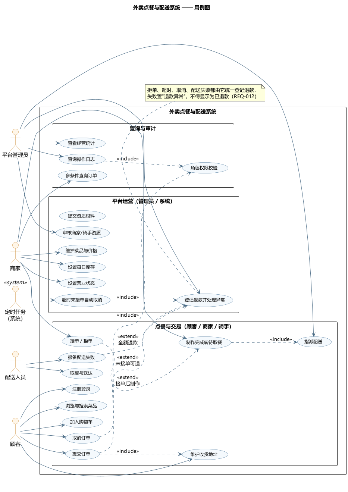
图 4-1 用例图：四类角色 + 系统定时任务的用例边界
类型：结构类（静态），任务书要求必画。目的：给出领域模型——有哪些实体、各自持有什么属性、彼此是 1:1 还是 1:N，以及哪些规则写在实体方法里。
要素与取舍：14 个领域类 + 6 个枚举，按"账号与店铺 / 交易 / 审计与事件 / 枚举"四个包组织。三处刻意设计：
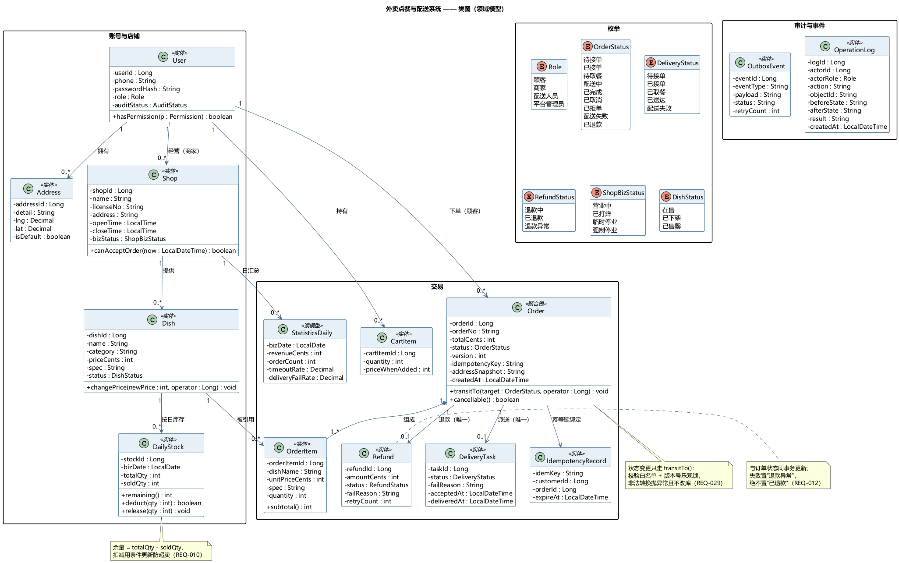
图 4-2 类图：领域模型（14 类 + 6 枚举）
类型：结构类（静态）。目的：说明系统由哪些可替换的组件构成、组件之间通过什么接口通信、一次下单要跨几个组件。
要素与取舍：4 个客户端组件、网关与会话组件、9 个应用组件（M1–M9，其中 M9 为通知）、5 个基础设施组件。绘制时特意把"订单组件"标注为编排中心，并在图下方注明"M3 库存与订单同库同事务"——这是整个架构最关键的一条约束，用图表达比用文字更直观。
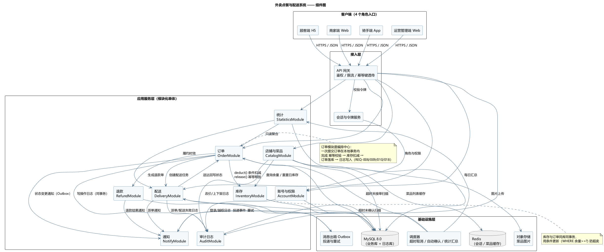
图 4-3 组件图：客户端 / 网关 / 9 个应用组件 / 基础设施
类型：结构类（静态）。目的：给出代码的物理组织方式与依赖方向，回答"新人拿到仓库后代码放在哪一层"。
要素与取舍：com.campus.delivery 下分 interfaces / application / domain / infrastructure / common 五个包，domain 内再分 model / service / repository。图中用虚线箭头标出"仓储接口由 infrastructure 实现"，即依赖倒置。第一版包图把 38 个类全画进去，宽 4096px，后来删到 20 个代表性元素——包图表达的是结构与依赖规则，不是类的清单。
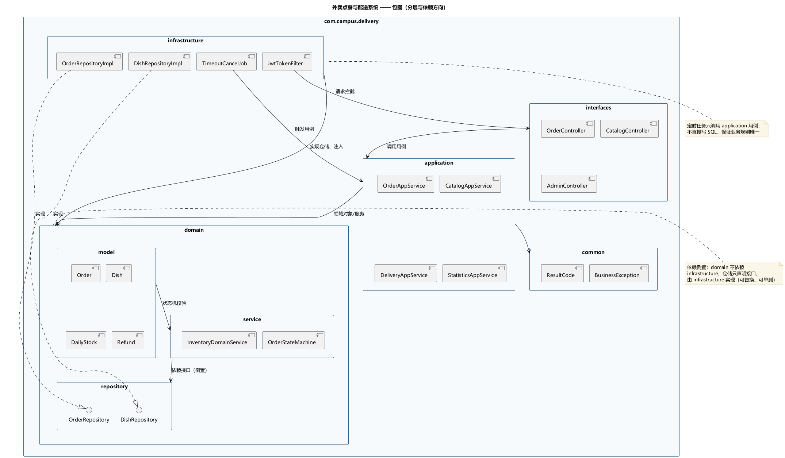
图 4-4 包图：四层结构与依赖倒置
类型：结构类（静态）。目的：说明软件跑在哪些节点上、节点之间用什么协议、故障时降级到什么程度。
要素与取舍：4 类客户端设备、Nginx、2 个应用实例、独立调度节点、MySQL 主从、Redis、对象存储。图上标注了两个关键设计：调度任务在多实例下要用锁保证只执行一次；应用采用"模块化单体 + 双实例"而不是微服务。这两条都直接对应 3.2 节的选型结论。
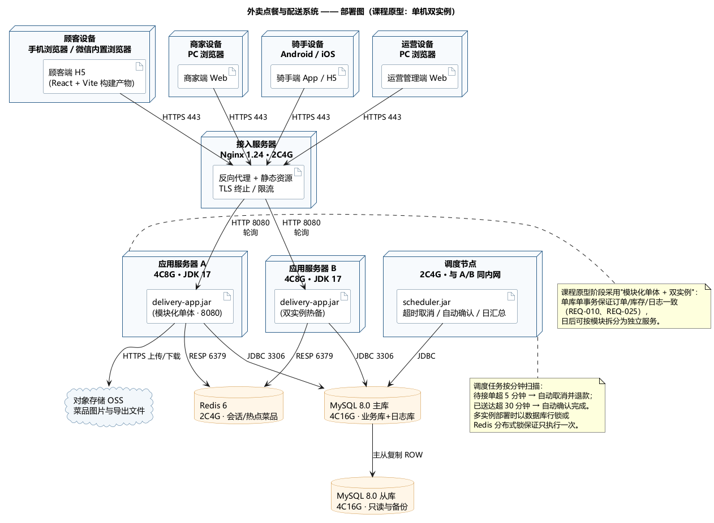
图 4-5 部署图：课程原型的节点与网络连接
类型：行为类（动态）。目的：把一个用例内部的判断逻辑展开，重点是失败分支——这正是实验一最容易被忽略、也最容易出 bug 的地方。
要素与取舍：用泳道区分「顾客 / 订单模块 / 库存模块 / 审计与通知」，四个判断节点分别对应四条需求：地址与范围（REQ-023）、幂等键（REQ-009）、价格变化（REQ-007）、库存扣减（REQ-010）。每个失败分支都以"提示并停止"结束，不留下半成品状态。
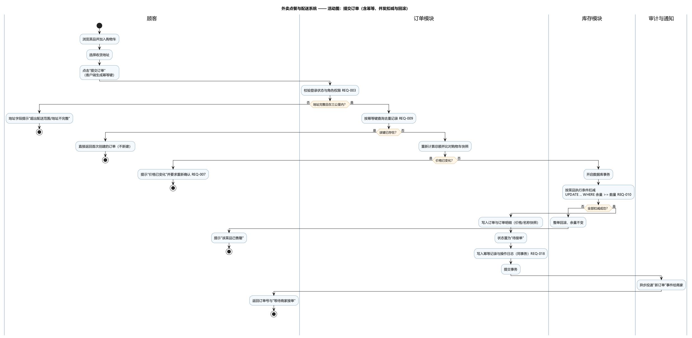
图 4-6 活动图：提交订单的四个判断与回滚路径
类型：行为类（动态）。目的：把实验一 REQ-029 的 9 个状态、9 条白名单转换画成可核对的图，明确哪些是终态。
要素与取舍：9 个状态中把已完成、已退款、已取消标为终态（灰底）；每一条转换边都写了触发者与条件（如"商家拒单（必填原因）"）。三处注释说明了设计意图：待接单进入的前提是"库存已扣减、总额已校验、幂等键已记录"；配送中只能由骑手本人推进；退款失败不进"已退款"而进"退款异常"。这三条是把实验一的异常需求直接落到图上的结果。
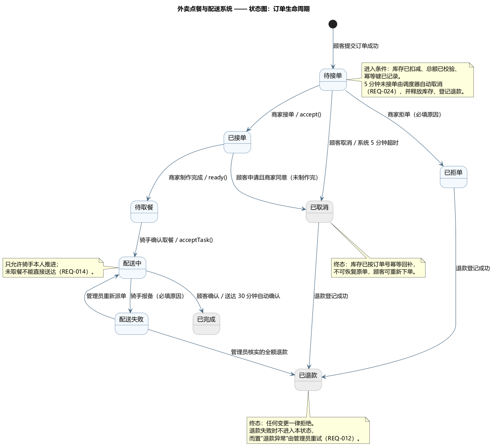
图 4-7 状态图：9 状态与 9 条合法转换，三个终态
类型：交互类。目的：按时间顺序展示一次下单中 8 个对象的协作，特别是幂等命中与库存不足两条 alt 分支。
要素与取舍：参与者按"客户端 → 网关 → 订单 → 库存 → 审计 → 数据库 → 消息队列"排列；用两个 alt 块分别处理"幂等键已存在"和"库存扣减失败"；图末注释强调订单、明细、库存、幂等记录、日志落在同一本地事务。这张图直接回答了"为什么不能拆库"。
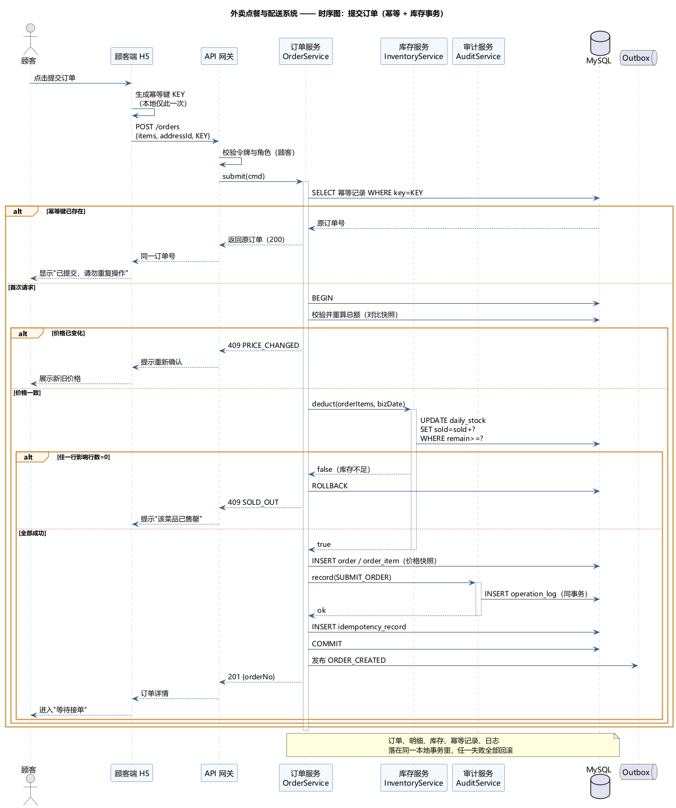
图 4-8 时序图：提交订单（幂等 + 库存事务）
类型：交互类。目的：展示定时任务与人工操作的并发冲突如何被条件更新化解，以及"取消 → 释放库存 → 退款 → 日志 → 通知"的完整链路。
要素与取舍：核心是 UPDATE 语句带 WHERE status='待接单' AND version=?，影响行数为 0 就跳过——这样"商家恰好在这一秒接单"和"定时任务取消"不会同时成功。库存释放与退款都按订单号幂等，避免重复扫描造成二次回补或重复退款。
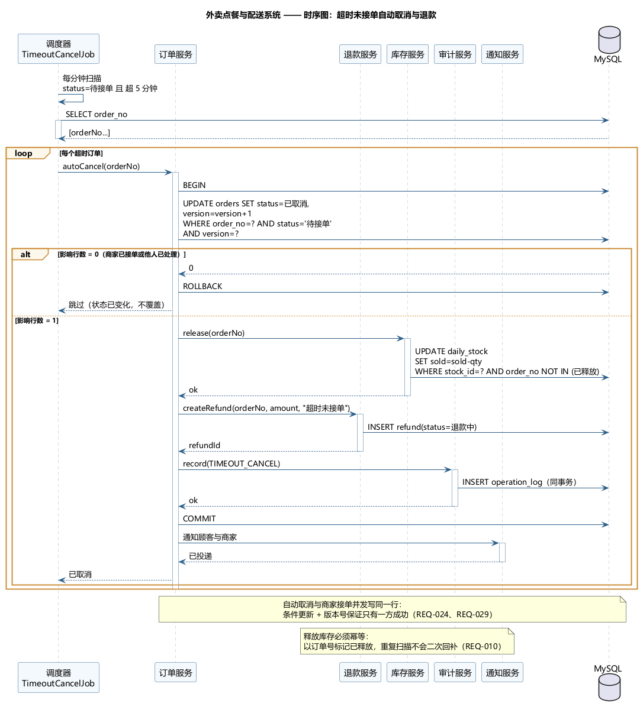
图 4-9 时序图：超时未接单自动取消与退款
界面按"角色优先"组织：一个角色一个入口，入口里按任务频率排序。四条设计原则：
| 入口 | 角色 | 主要界面 | 对应模块 |
|---|---|---|---|
| 顾客端 H5 | 顾客 | 菜品查询、菜品详情、购物车、确认订单、订单详情、我的订单 | M1、M3、M4、M7 |
| 商家端 Web | 商家 | 订单看板、菜品与库存、店铺设置、经营统计 | M2、M4、M5、M8 |
| 骑手端 App | 配送人员 | 配送任务（取餐/送达/报备失败） | M6 |
| 运营管理端 Web | 平台管理员 | 资质审核、异常处理、操作日志 | M1、M7、M8 |
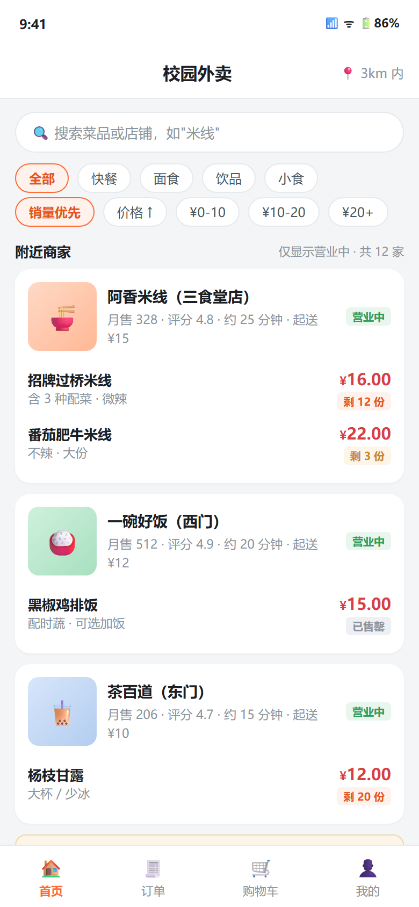
图 5-1 菜品查询
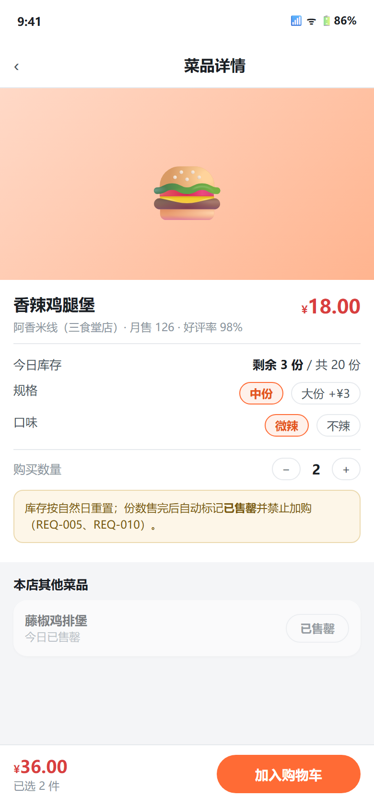
图 5-2 菜品详情
| 界面 | 功能与交互要点 | 对应需求/设计点 |
|---|---|---|
| 菜品查询 | 顶部搜索框支持菜名/店名；分类与价格区间按 chip 多选；只展示营业中店铺；售罄菜品保留展示但标灰；底部说明"停业店铺不出现，已接订单继续履约" | REQ-006（多条件查询与排序）、REQ-004（营业状态）、REQ-010（售罄可见不可购） |
| 菜品详情 | 库存以"剩 3 份 / 共 20 份"呈现；规格与口味二选一；售罄商品整行置灰且按钮不可点；底部实时合计 | REQ-005（每日库存）、REQ-007（加购）、REQ-010（余量提示） |
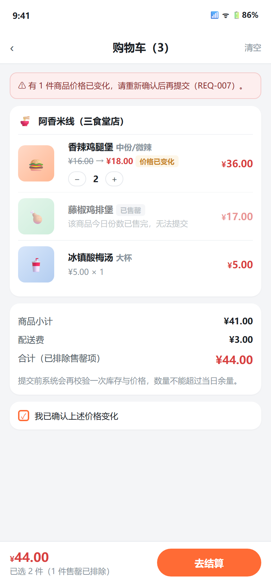
图 5-3 购物车（价格变化与售罄）
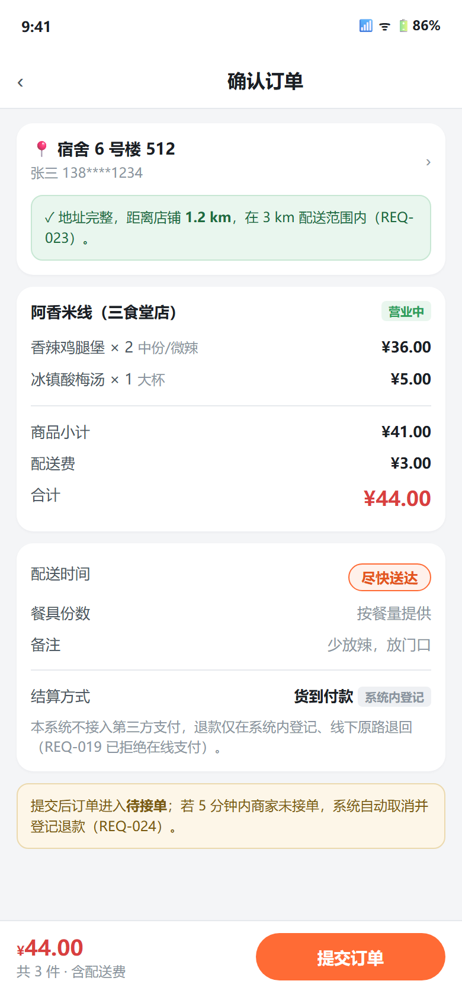
图 5-4 确认订单
| 界面 | 功能与交互要点 | 对应需求/设计点 |
|---|---|---|
| 购物车 | 按店铺分组；改价商品显示"原价 → 新价"并高亮；售罄行整行变灰且不计入合计；必须勾选"已确认价格变化"才能结算 | REQ-007（价格变化提示）、REQ-010（售罄拦截） |
| 确认订单 | 地址卡片直接给出"距离 1.2 km，在 3 km 范围内"的校验结果；金额明细到分；结算方式明确写"货到付款、系统内登记" | REQ-023（地址与范围校验）、REQ-008（价格快照与总额）、REQ-019（不接在线支付） |
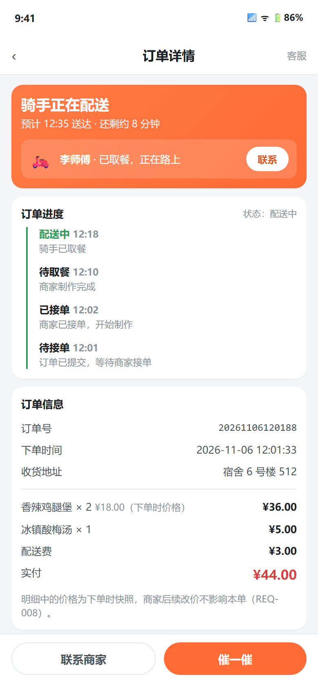
图 5-5 订单详情（状态时间轴）
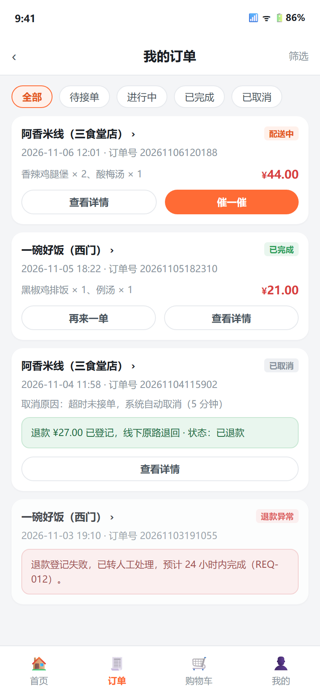
图 5-6 我的订单
| 界面 | 功能与交互要点 | 对应需求/设计点 |
|---|---|---|
| 订单详情 | 顶部大字状态 + 预计送达；时间轴显示四个已发生节点；"取消订单"在配送中变为禁用并说明原因；明细标注"下单时价格" | REQ-029（状态与禁止转换）、REQ-008（快照价格）、REQ-012（取消窗口） |
| 我的订单 | 状态筛选 chip；每单直接展示状态标签；超时取消的单显示"系统自动取消 + 已退款"；退款异常单用红框提示人工处理中 | REQ-016（多条件查询）、REQ-024（超时取消）、REQ-012（退款异常可见） |
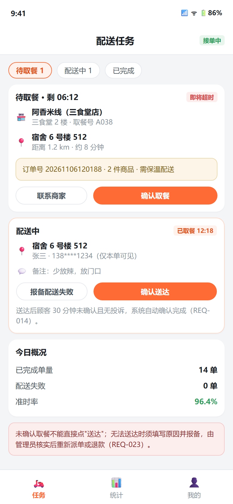
图 5-7 配送任务
功能：待取餐 / 配送中 / 已完成三个分组；每个任务卡显示商家取餐号、顾客地址、距离与预计时间。
交互要点：
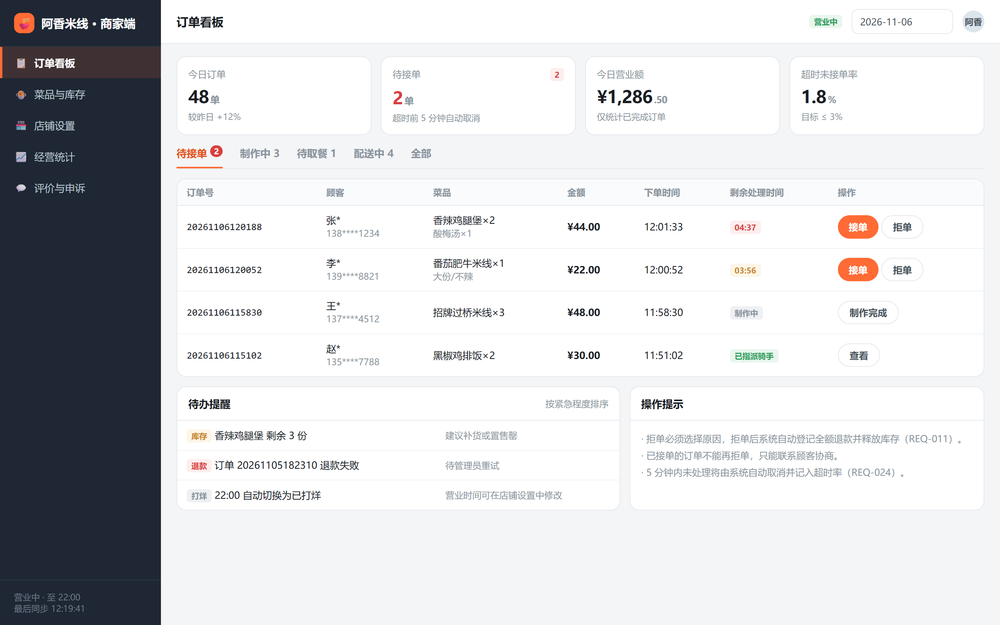
图 5-8 订单看板（待接单倒计时、接单/拒单）
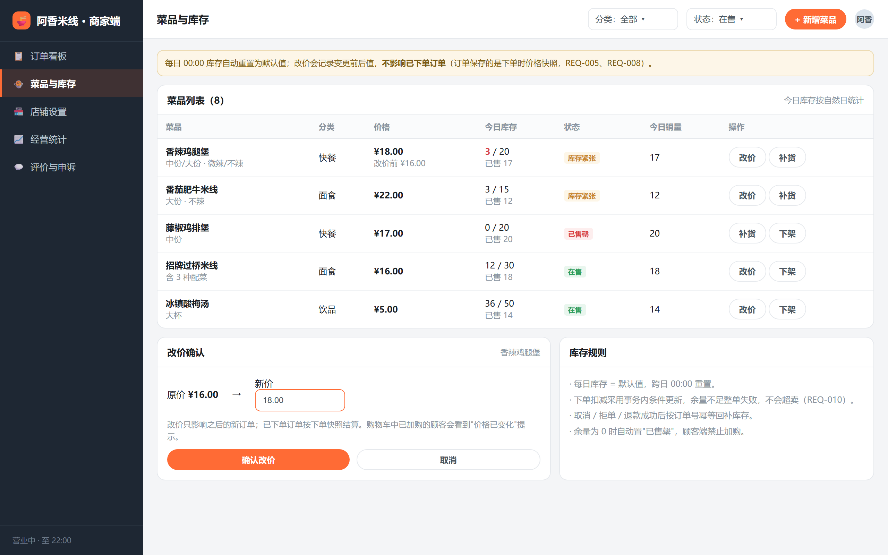
图 5-9 菜品与库存（改价、补货、售罄、上下架）
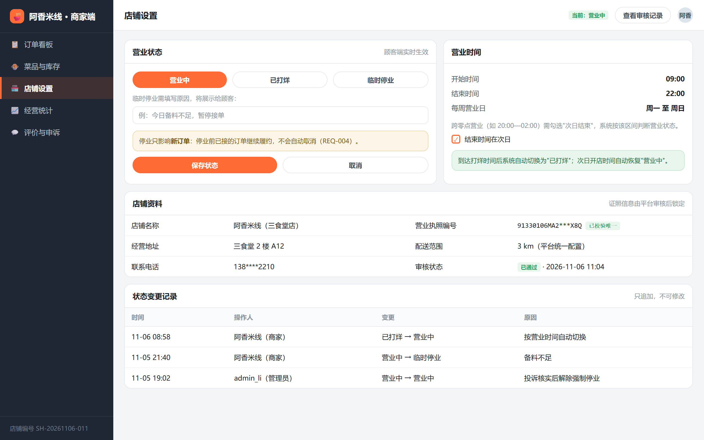
图 5-10 店铺设置（营业状态、营业时间、临时停业）
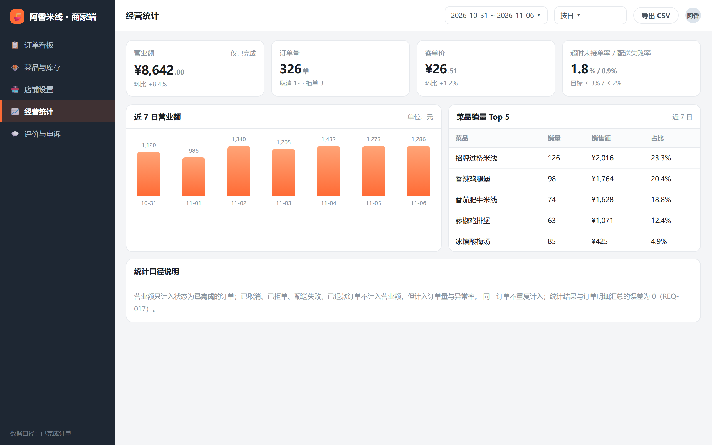
图 5-11 经营统计（营业额、销量、异常率与统计口径）
| 界面 | 功能与交互要点 | 对应需求/设计点 |
|---|---|---|
| 订单看板 | KPI 区显示待接单数与超时率；每条待接单给出剩余处理时间倒计时，低于 5 分钟显示红色；接单/拒单两键并列，拒单强制填原因；右侧提示区解释"拒单会自动退款并释放库存" | REQ-011（接单/拒单）、REQ-024（5 分钟超时）、REQ-017（超时率） |
| 菜品与库存 | 表格直接呈现"剩余/总量"；余量为 0 标红"已售罄"；改价弹层显示原价→新价，并注明"不影响已下单订单"；补货、下架在同一行操作 | REQ-005（改价留痕、每日库存）、REQ-008（快照不影响历史单） |
| 店铺设置 | 营业状态三选一（营业中/已打烊/临时停业），临时停业必须填原因；营业时间支持跨零点勾选；店铺资料中的证照编号只读并标注"已校验唯一"；底部状态变更记录只追加不可改 | REQ-004（营业状态与跨零点）、REQ-002（证照唯一）、REQ-018（变更留痕） |
| 经营统计 | 7 日营业额柱状图 + 菜品销量 Top5；KPI 含超时未接单率与配送失败率；页面底部固定"统计口径"说明，避免与订单列表对不上 | REQ-017（统计汇总与口径）、REQ-002（营业额只计已完成） |
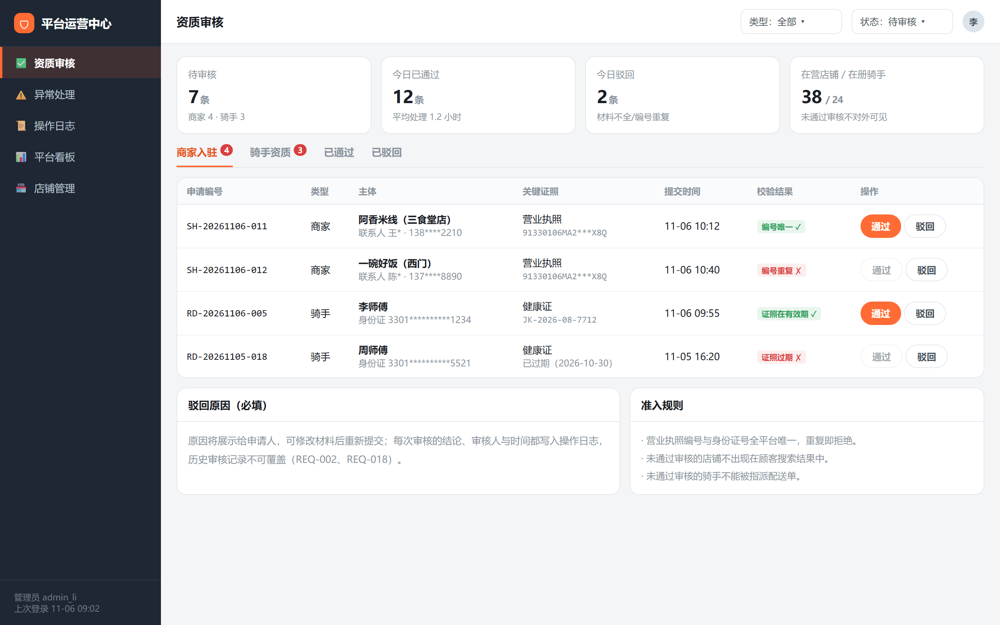
图 5-12 资质审核（证照唯一性校验、驳回必填原因）
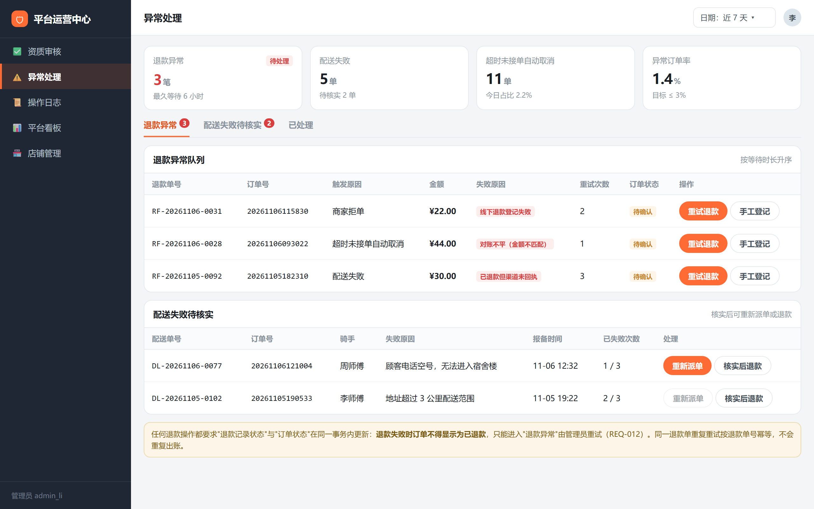
图 5-13 异常处理（退款异常队列、配送失败核实）
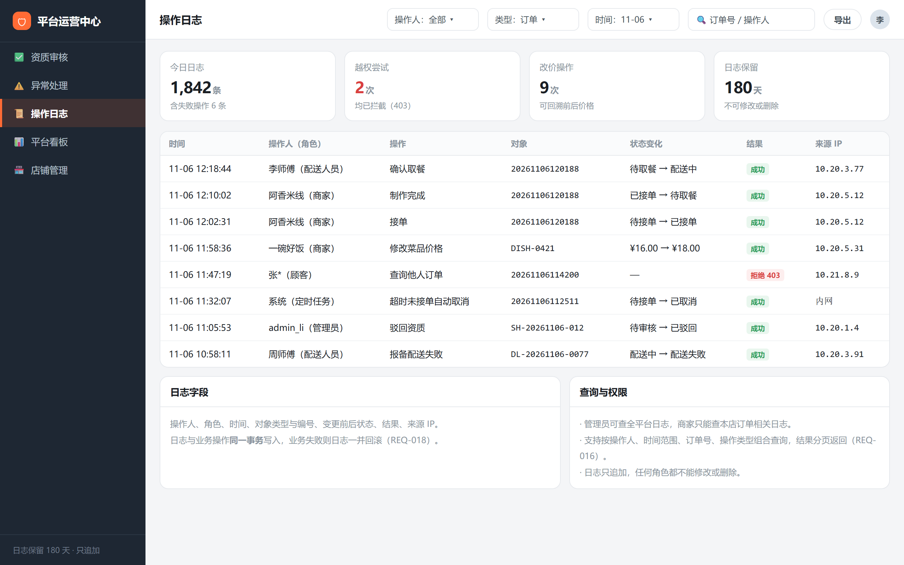
图 5-14 操作日志（多条件查询、状态前后变化、越权拦截记录）
| 界面 | 功能与交互要点 | 对应需求/设计点 |
|---|---|---|
| 资质审核 | 商家营业执照与骑手健康证在同一列表；系统直接给出"编号唯一 ✓ / 重复 ✗""证照在有效期 ✓ / 过期 ✗"的校验结论；不合法时"通过"按钮置灰 | REQ-002（资质审核与唯一性）、REQ-003（仅管理员可审） |
| 异常处理 | 退款异常按等待时长排序，展示失败原因与重试次数，提供"重试退款/手工登记"；配送失败单展示失败原因与已失败次数，提供"重新派单/核实后退款" | REQ-012（退款一致性）、REQ-023（配送失败处理） |
| 操作日志 | 四个筛选条件（操作人/类型/时间/关键字）；每行呈现"变更前 → 变更后"与来源 IP；越权尝试以红色"拒绝 403"记录，可与业务日志同表检索 | REQ-018（日志记录）、REQ-016（多条件查询）、REQ-022（越权拦截） |
本次设计把 AI 当作"加速器"而不是"决策者"，给自己定了三条规则：①结构性问题（模块怎么分、状态怎么转）由我先定，再让 AI 补充细节；②AI 产出的每一张图、每一个界面都要能用实验一的需求编号解释，解释不了就重做；③所有生成物都经过至少一轮修改，修改点记录在下面。
| 项目 | 内容 |
|---|---|
| 使用场景 | 已确定 8 个模块，需要一份领域类图初稿，包含实体、枚举与关系。 |
| 我的提示词 | 摘要：「为校园外卖系统画 PlantUML 类图，包含顾客/商家/骑手/管理员、店铺、菜品、每日库存、订单、订单明细、配送单、退款、日志；标注多重性；金额用分；给出每个类的关键字段和方法。」 |
| 生成结果 | 给出 14 个类 + 6 个枚举，关系基本正确，但把 9 个应用服务接口也画进了同一个类图，导致图宽 4096px；此外漏了"幂等记录"类，配送单被画成 1:N。 |
| 优点 | 字段命名规范（xxxCents、xxxAt），枚举值齐全，省去了从零列举属性的大量时间。 |
| 问题 | ①把"服务接口"和"领域实体"混在一张图，违反类图聚焦领域模型的惯例；②一单一配送单这个关键约束画错；③漏了幂等记录，等于漏掉了 REQ-009 的实现载体。 |
| 我的修改 | 拆掉服务接口（改由组件图表达）；补 IdempotencyRecord、OperationLog、Refund 三个类；把配送单改为 0..1 并在 note 中写明"唯一"；最终宽度 2052px，可放进 A4。 |
| 项目 | 内容 |
|---|---|
| 使用场景 | 需要一张能同时表达四类角色与 20 余个用例的用例图。 |
| 我的提示词 | 摘要：「按角色列出外卖系统用例，用 package 分组，标出 include/extend，使用 left to right direction。」 |
| 生成结果 | 生成 5 个包、32 条连线、大量 include/extend 的版本，渲染后 1053×2194，连线横穿整张图，几乎无法阅读。 |
| 优点 | 用例划分的业务含义准确，include/extend 的方向没有搞反。 |
| 问题 | 布局被"多分组 + 多关系"拖垮；用例图的核心价值（边界与角色）被关系线淹没。 |
| 我的修改 | 合并为 3 组、角色连线保留、include/extend 只留 8 条最关键的；增加「定时任务」系统参与者；比例从 0.48 变成 0.71，一页可读。 |
| 项目 | 内容 |
|---|---|
| 使用场景 | 需要表达提交订单的内部判断，尤其是失败路径。 |
| 我的提示词 | 摘要：「画下单流程活动图，分为顾客、订单、库存三个泳道，包含地址校验、库存扣减、订单创建。」 |
| 生成结果 | 生成了主流程，但只有"库存不足"一个判断；没有幂等键判断，也没有价格变化分支；失败时直接结束，没写"整单回滚"。 |
| 优点 | 泳道划分合理，主干顺序正确。 |
| 问题 | 漏掉实验一明确要求的两类异常（重复提交、改价），且没体现事务回滚，读图者会以为扣减失败后库存仍然被改。 |
| 我的修改 | 补"幂等键已存在 → 返回原单""价格已变化 → 要求重新确认""扣减失败 → 整单回滚且余量不变"三条分支，并在每个分支标注对应需求号。 |
| 项目 | 内容 |
|---|---|
| 使用场景 | 把 REQ-029 的 9 个状态画成状态图。 |
| 我的提示词 | 摘要：「画订单状态图，状态有待接单、已接单、待取餐、配送中、已完成、已取消、已拒单、配送失败、已退款，给出转换条件。」 |
| 生成结果 | 9 个状态与主链路正确，但没有标出终态，也没有说明"退款失败"时怎么办；配送失败到已退款的边缺少"管理员核实"这一前置条件。 |
| 优点 | 转换条件写得具体（"商家接单""顾客确认"），可直接对应到接口。 |
| 问题 | 状态图没有终态就等于没有说清"哪些操作永远不可能再发生"，而 REQ-029 的核心正是"禁止的转换"。 |
| 我的修改 | 给已完成/已取消/已退款加「终态」样式与说明；补"配送失败 → 重新派单 → 配送中"的回环；在注释中写明退款失败置"退款异常"而非"已退款"。 |
| 项目 | 内容 |
|---|---|
| 使用场景 | 14 屏界面需要统一的视觉规范与布局。 |
| 我的提示词 | 摘要：「设计外卖 App 的菜品列表页和购物车页，给出配色、卡片结构与主要元素。」 |
| 生成结果 | 给出了橙色主色 + 圆角卡片 + 图片左文右价的布局建议，风格可用；但只画了"一切正常"的状态，没有售罄、改价、超时等异常态；桌面端完全没有考虑。 |
| 优点 | 配色方案（#FF6B35 主色、语义色分离）与卡片信息层级合理，直接沿用；省去了配色试错。 |
| 问题 | ①异常态缺失，而实验一的 11 条异常需求最终都要在界面上表达；②移动端与桌面端没有区分栅格。 |
| 我的修改 | 建立 8px 栅格与移动 390×844 / 桌面 1280×800 两套尺寸；给购物车加"价格已变化"与"售罄置灰"、给商家看板加 5 分钟倒计时、给订单详情加禁用态与原因说明、给异常处理页加"重试/重新派单"双路径；共 14 屏全部重画。 |
| 项目 | 内容 |
|---|---|
| 使用场景 | 让 AI 帮忙润色"关键设计决策"一节。 |
| 我的提示词 | 摘要：「把下面 7 条设计决策改写得更专业、更简洁。」 |
| 生成结果 | 文字确实更通顺，但把"采用了条件扣减"改写成"系统绝不会超卖"这类绝对化结论，还删掉了需求编号。 |
| 优点 | 句式紧凑，适合报告体裁。 |
| 问题 | 把"设计意图"写成了"已验证的事实"——设计阶段并没有压测数据支撑"绝不超卖"，这种表述在评审时会被追问。 |
| 我的修改 | 全部改回"做法 + 依据需求编号"的可核对表述，删掉绝对化措辞；结论只写在验收方法里。 |
| 维度 | 优点（本次实际感受到的） | 局限（本次实际踩到的） |
|---|---|---|
| 结构生成 | 类、字段、枚举能一次列全，命名风格统一，省去大量查漏补缺的时间 | 不知道"哪些该画进同一张图"，容易把服务接口混进类图 |
| 图布局 | PlantUML 语法正确，关系方向基本不出错 | 对"可读性"没有概念，图会越画越宽/越长，需要人工按页面尺寸反推结构 |
| 业务规则 | 能复述常见的订单状态与流转 | 抓不住项目的特有约束（一单一配送单、退款异常、超时必须幂等），这些恰恰是需求文档里的重点 |
| 界面设计 | 配色、间距、信息层级的建议直接可用 | 只画"快乐路径"，异常态与禁用态几乎不主动给 |
| 文字表达 | 句式紧凑、术语规范，适合做初稿 | 倾向把设计意图写成绝对结论，会削弱报告的可信度 |
本次体验下来，答案是可以做到大部分，但"检查"这一步无法取消，只能前移。我尝试总结一条可落地的工作流：
| 步 | 环节 | 由谁做 | 产出与校验点 |
|---|---|---|---|
| 1 | 约束抽取 | 人（不可替代） | 从需求文档抽出硬约束清单：状态数、唯一性、异常分支、非功能指标。这是后续所有校验的基准。 |
| 2 | 批量生成 | AI | 按模板生成 PlantUML / 界面 / 表格，一次生成多版供挑选。 |
| 3 | 机器校验 | 脚本 | 自动检查：需求编号是否都有落点、状态转换是否都在白名单内、图片宽高比是否适配 A4、界面是否覆盖全部异常态。这一步把"人工翻图"变成"跑脚本"。 |
| 4 | 人工审阅 | 人 | 只看三类问题：语义是否答非所问、约束是否被违反、结论是否有依据。不看排版细节。 |
| 5 | 定稿与追溯 | 人 | 每次修改对应一个需求编号或一条审查记录，形成可回溯的设计日志。 |
这条流水线里，人真正保留的是第 1 步的约束定义和第 4 步的语义判断，其余交给 AI 与脚本。换句话说：AI 能把"画图、排版、措辞"的成本压到接近零，但"决定什么是对的"这件事无法外包——而后者恰好是设计工作中最值钱的部分。
本次设计全程用 Git 追踪，分成"AI 生成初稿"与"人工修改"两次提交，标签固定后不再移动。差异可以用 git diff lab2-ai-draft lab2-final --stat 复核。
| 项目 | 内容 |
|---|---|
| 仓库地址 | https://github.com/cxh4387-dotcom/se-lab2 |
| 分支 | main |
| lab2-ai-draft（AI 初稿） | c6270be6eeba01ecddeb13a9977b014928d1935e |
| lab2-final（人工修改） | bf5eeae2a9a2ce7dca1bec4a31b569798f97f64c |
| 初稿内容 | UML 6 张（类图、用例图、组件图、包图、活动图、提交订单时序图）+ UI 11 屏 |
| 人工修改内容 | 新增状态图、部署图、超时取消时序图（+3 图），新增异常处理、操作日志与店铺设置界面（+3 屏），并逐条核对图与界面对需求的覆盖 |
| 路径 | 数量 | 说明 |
|---|---|---|
| 实验报告.pdf | 1 | 本报告 |
| UML/*.puml | 9 | PlantUML 源文件，可直接重新渲染 |
| UML/*.png | 9 | 对应的渲染图，报告中的插图即引用这些文件 |
| UI界面/*.png | 14 | 顾客端 6 屏、商家端 4 屏、骑手端 1 屏、管理端 3 屏 |
| 处理方式 | 涉及需求 | 说明 |
|---|---|---|
| 完整设计 | REQ-001～014、016～018、023、024、029 | 有类、有接口、有界面、有异常分支，实现阶段可直接照做 |
| 设计细化但留参数 | REQ-020（具体阈值）、REQ-025（可用性口径） | 结构上支持（压测入口、健康检查、事务边界），具体数值在实现阶段按实际机器标定 |
| 本期不实现 | REQ-015（骑手评分）、REQ-019（在线支付） | 已拒绝，界面与数据模型均不预留入口，避免"做了半个" |
| 待确认 | REQ-026（骑手抢单） | 设计上保留 DeliveryTask 的指派方式字段，但不实现抢单入口 |
按任务书"允许留 TODO，但基本结构要完整"的要求，以下是刻意留给实验三的实现细节，均不影响架构成立：
| # | TODO | 原因 | 实现时的注意点 |
|---|---|---|---|
| 1 | 短信验证码与真实登录态 | 课程环境无短信网关 | 先用固定验证码或控制台输出，接口保持不变 |
| 2 | 3 公里配送范围的真实计算 | 不接入地图服务 | 用经纬度球面距离近似（Haversine），阈值可配置 |
| 3 | 统计的定时汇总任务 | 原型阶段数据量小 | 先实时聚合，接口不变；数据量上来再切换到 statistics_daily |
| 4 | Outbox 的失败重试与告警 | 需要消息中间件 | 先用数据库轮询表实现，语义与 MQ 一致 |
| 5 | 菜品图片上传 | 对象存储需申请 | 先存本地目录，接口返回 URL 的形式不变 |
| 6 | 压测与可用性实测 | 依赖部署环境 | 按 REQ-020/025 的脚本与口径执行并留档 |
| 7 | 抢单模式 | REQ-026 待确认 | 只在 DeliveryTask 预留字段，不开放入口 |
下表把实验一的每条需求映射到本实验的模块、UML 图与界面，用于检查"需求是否有落点、设计是否有依据"。状态列与实验一保持一致。
| 需求 | 名称 | 状态 | 模块 | 图 | 界面 |
|---|---|---|---|---|---|
| REQ-001 | 顾客注册与登录 | 已确认 | M1 | 用例图、类图 | — |
| REQ-002 | 商家与骑手资质审核 | 已确认 | M1 | 用例图、活动图 | 图 5-12 |
| REQ-003 | 角色权限控制 | 已确认 | M1 | 组件图、类图 | 全部入口 |
| REQ-004 | 店铺营业状态管理 | 已确认 | M2 | 类图、状态图（隐含） | 图 5-1 |
| REQ-005 | 菜品维护与每日库存 | 已确认 | M2 | 类图（Dish/DailyStock） | 图 5-2、5-9 |
| REQ-006 | 菜品多条件查询与排序 | 已确认 | M3 | 用例图 | 图 5-1 |
| REQ-007 | 购物车与价格、售罄提示 | 已确认 | M3 | 活动图（价格分支） | 图 5-3 |
| REQ-008 | 提交订单与价格快照 | 已确认 | M4 | 类图、活动图、时序图 1 | 图 5-4 |
| REQ-009 | 重复下单与重复请求处理 | 已确认 | M4 | 活动图、时序图 1 | 图 5-4 |
| REQ-010 | 库存并发扣减与售罄拦截 | 已确认 | M5 | 活动图、时序图 1/2 | 图 5-2、5-9 |
| REQ-011 | 商家接单与拒单 | 已确认 | M4 | 状态图、用例图 | 图 5-8 |
| REQ-012 | 订单取消与退款一致性 | 已确认 | M4/M7 | 状态图、类图（Refund） | 图 5-5、5-13 |
| REQ-013 | 制作完成与配送指派 | 已确认 | M6 | 状态图、组件图 | 图 5-8 |
| REQ-014 | 配送执行与送达确认 | 已确认 | M6 | 状态图、用例图 | 图 5-7 |
| REQ-015 | 骑手评价与评分 | 已拒绝 | — | — | 不预留入口 |
| REQ-016 | 订单与操作日志多条件查询 | 已确认 | M8 | 类图、组件图 | 图 5-6、5-14 |
| REQ-017 | 经营统计汇总 | 已确认 | M8 | 组件图 | 图 5-11 |
| REQ-018 | 关键操作日志记录 | 已确认 | M8 | 类图（OperationLog）、时序图 | 图 5-14 |
| REQ-019 | 在线支付与自动退款 | 已拒绝 | — | — | 界面标注"货到付款" |
| REQ-020 | 查询与下单响应时间 | 已确认 | — | 部署图（容量估算） | — |
| REQ-021 | 数据唯一性与一致性约束 | 已确认 | 全部 | 类图、3.8 表设计 | — |
| REQ-022 | 账号与敏感信息保护 | 已确认 | M1 | 组件图（鉴权链） | 图 5-7、5-8 脱敏 |
| REQ-023 | 配送失败与地址异常 | 已确认 | M6 | 活动图、状态图 | 图 5-7、5-13 |
| REQ-024 | 超时未接单自动取消 | 已确认 | M4 | 时序图 2、状态图 | 图 5-8 |
| REQ-025 | 可用性与故障恢复 | 已确认 | — | 部署图 | — |
| REQ-026 | 骑手抢单模式 | 待确认 | M6 | —（预留字段） | 不提供入口 |
| REQ-027 | 下单易用性 | 已确认 | — | — | 图 5-1～5-6 |
| REQ-028 | 浏览器与终端兼容性 | 已确认 | — | 部署图（客户端类型） | 双端栅格 |
| REQ-029 | 订单状态机与非法转换拦截 | 已确认 | M4 | 状态图、类图（Order） | 图 5-5 禁用态 |
说明：UML 源文件与渲染图位于 UML/，界面图位于 UI界面/；本报告中的插图与这两个目录下的文件一一对应，修改源文件后可重新渲染覆盖。